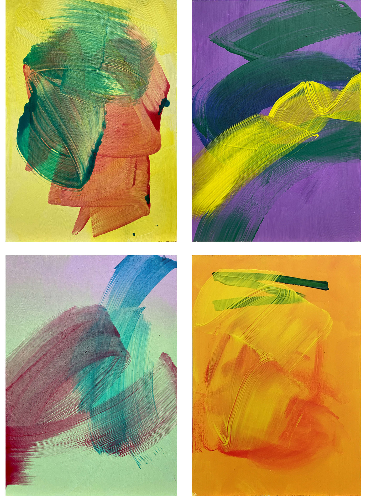
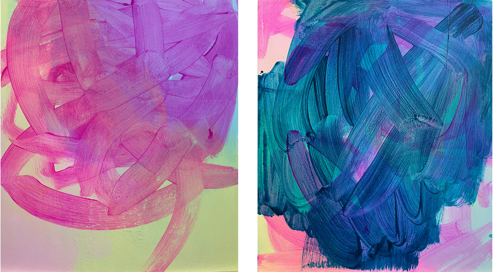
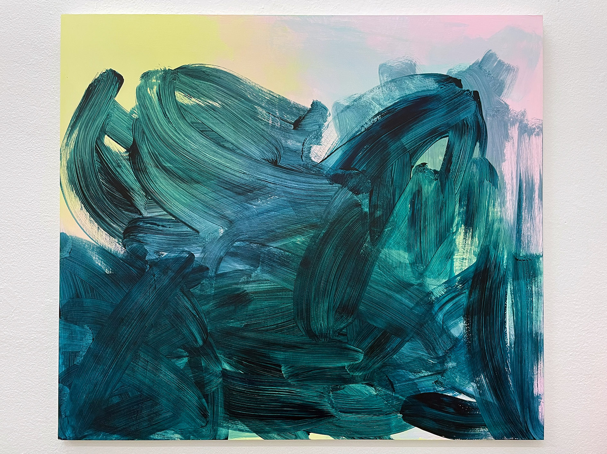
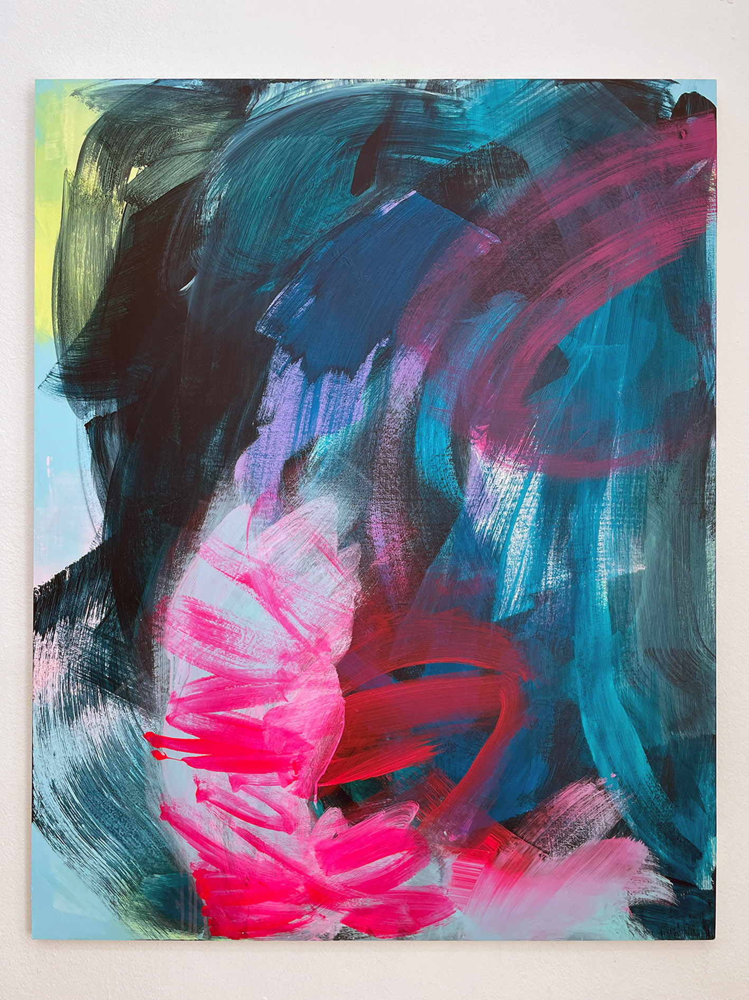
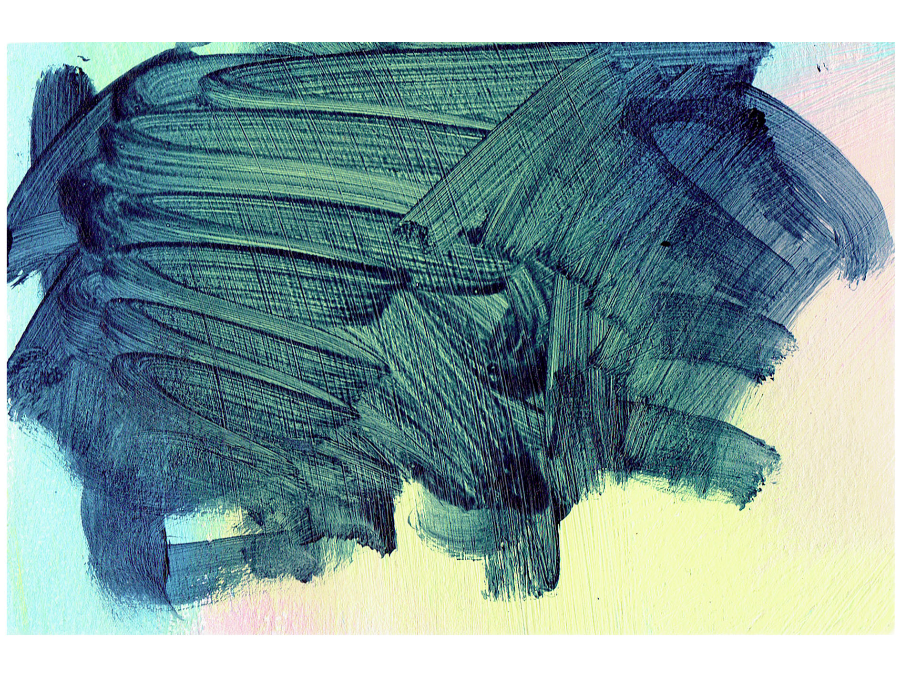
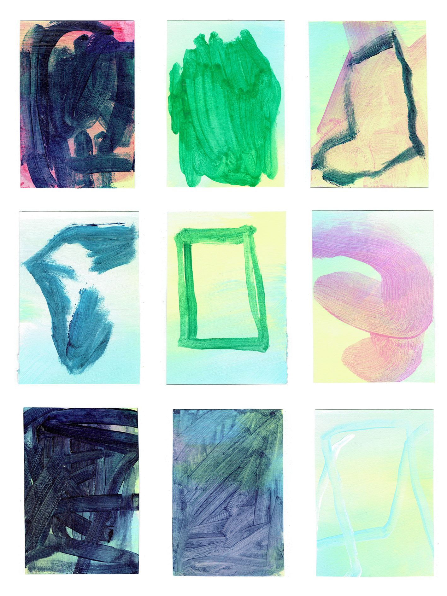
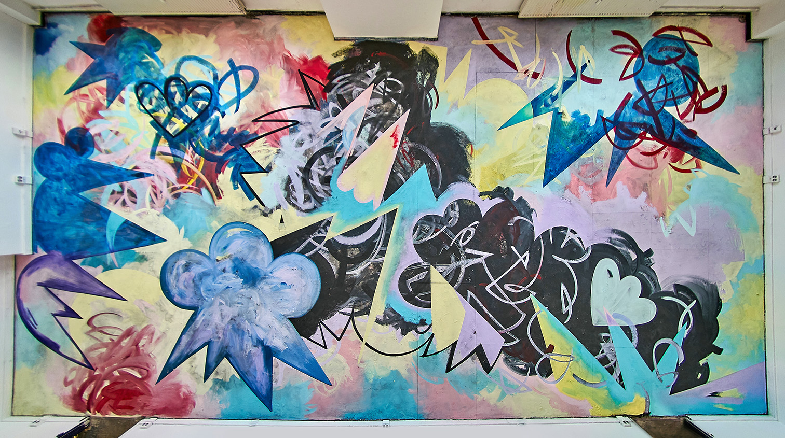

UPCOMING: 2. - 6. November 2022 // Karl Oskar Gallery, Discovery Art Fair Frankfurt, GE march 2022 // Pop Up Galerie, Tønsberg, NO (Gruppenausstellung) jan 2023 // Die Vorstellung, Kunsthafen Köln (Gruppenausstellung)
I believe that an artwork´s meaning is deeply connected with the construction of identity.

untitled (2022) photo NBR
each acrylic paint on wood, 21 * 29 cm

untitled (2022) photo NBR
each acrylic paint on wood, 15 * 21 cm

untitled (2022) photo NBR
each acrylic paint on wood, 29 * 21 cm

untitled (2022) photo NBR
each acrylic paint on wood, 50 * 40 cm

untitled (2022) photo NBR
acrylic paint on wood, 80 * 90 cm

untitled (2022) photo NBR
acrylic paint on wood, 125 * 100 cm

tiny (2022) photo NBR
acrylic paint on paper, 15 * 10 cm
 tinyone - tinynine (2022) photo NBR
acrylic paint on paper, 15 * 10 cm

thirny (2022) photo NBR
acrylic paint on paper, 15 * 10 cm

brookalaktika (2022) photo Jack Engine
acrylic paint on canvas, each 150 * 1480 cm
site specific installation at 48HNeukölln curated by Fünfter Löffel //
Fassade Galerie am Saalbau // Berlin // Urban Art Festival



the brooke bar (2022) photo Lüder Lindau
wallpaint on floor, 700 * 1000 cm
site specific painting at OPENING HOURS curated by Fünfter Löffel //
Treptow Ateliers e.V. Berlin // Group Show //

feeling like myself again - brookestyle II (2022) acrylic paint on canvas, 100 * 90 cm

my world my rules (2020) oil paint on wood panel, 53 * 61 cm

royal brooke (2017) acrylic paint on canvas 205 * 390 cm

brooke (2016) acrylic paint on wood panel 122,5 * 93,5 cm

unicorn universe (2016) acrylic paint on wood panel 85 * 122,5 cm

abstract narrative (2016) ink, ancrylic paint and pencil on paper 250 * 700 cm

variation: shapes that look like hearts falling in love with stars (2016) sugarlift etching and monotype print 65 * 45 cm

variation: shapes that look like hearts falling in love with stars (2016) sugarlift etching and monotype print 65 * 45 cm
Nora Brooke Roggausch * 1988
based in Berlin 2020 // BA Carl von Ossietzky University Oldenburg GE // Arts Media & Economics 2016 // California State University Long Beach USA // Drawing Painting & Printmaking 2013 // Kunsthochschule Berlin Weißensee GE // Printmaking 2012 // BFA Academy of Fine Arts Maastricht NL // Autonomous Fine Art 2011 // Faculdade de Belas Artes de Lisboa PT // Painting & Printmaking
2020 // Finalist Förderpreis Malerei Kulturstiftung Öffentliche Oldenburg 2019 // Promos Research Scholarship Las Vegas DAAD 2016 // Arnold Heidsieck Scholarship ZEIT Stiftung Ebelin Gerd Bucerius and American Friends of Bucerius
2022 // Inventory, Karl Oskar Gallery, Berlin (group show)
2022 // Kunst Express II, Kreativraum Galerie im Körnerpark, Berlin (group show)
2022 // Brookalaktika, Galerie am Saalbau during 48HNeukölln curated by Fünfter Löffel, Berlin (urban art festival)
2022 // Kafayi Yemek, Neuköllner Salon, curated by Tim B. Boroewitsch, Berlin (group show)
2022 // Opening Hours, Treptow Ateliers Berlin, curated by Fünfter Löffel (group show)
2022 // North Oversee, Kunsthalle Wilhelmshaven, curated by Maik Schierloh (group show)
2022 // TRAUMUNZEIT Canvas Corpulation by Nora Brooke Roggausch & Robin von Gestern, Kunsthafen Köln (duo show // painting collaboration)
2021 // Inventory, Karl Oskar Gallery, Berlin (group show)
2020 // Live Painting Performance in collaboration with Viktoria Elisabeth Kaunzner, violinist & composer, Mendehlssohn-Remise Berlin
2019 // Live Painting Performance in collaboration with Viktoria Elisabeth Kaunzner, Zionskirche Berlin
2017 // Superheroes live in the Unicorn Universe, Museum Ratingen (solo show)
2017 // Mystic, Karl Oskar Gallery, Berlin (group show)
2016 // Ink 17: Turf, Marilyn Werby Gallery, Long Beach, USA (group show)
2015 // Die Lichtenberg Norm, Galerie Zwitschermaschine, Berlin (group show)
2014 // Exhibition and auction Kunstverein Bahner e.V., Schloß Neuenburg, Neuenburg (group show)
2014 // Anonymous Drawings 2014 – Based in Berlin, Pavillion am Milchhof, Berlin (group show)
2013 // The Enchanted Wood, Artwood Studio, Tønsberg, NO (group show)
2013 // Dreamworlds, Schillerpalais, Berlin (group show)
2013 // Neverland HEDAH, Maastricht, NL (group show)
2013 // Macht Kunst, Deutsche Bank Kunsthalle, Berlin (group show)
2013 // Nora Roggausch – Drawing and Painting Kurhaus Dangast, Dangast (solo show)

2019 // Experiments with the Human Heart. Poetry Kea Heinrich. Illustration Nora Roggausch. Berlin: Lametta Verlag